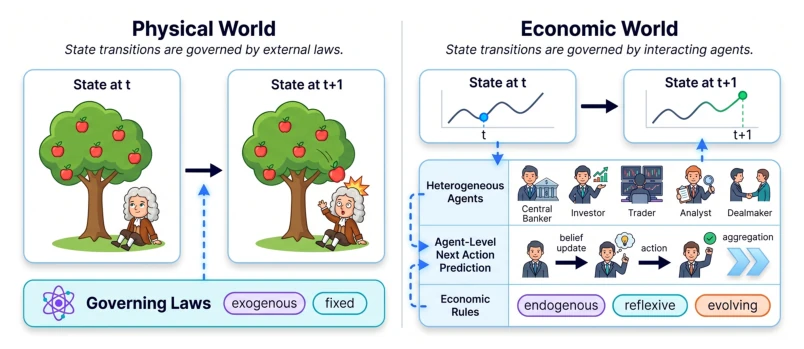
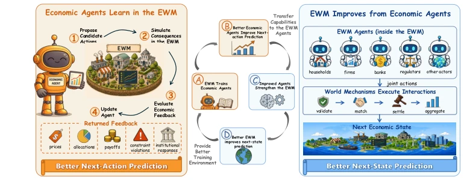
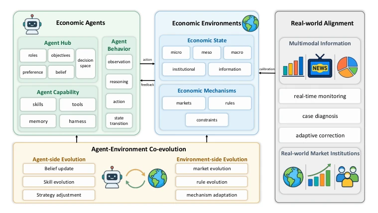
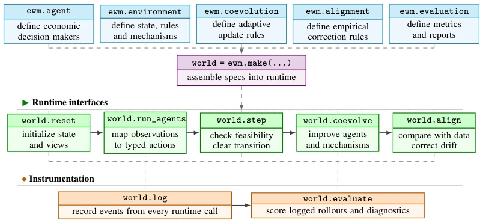
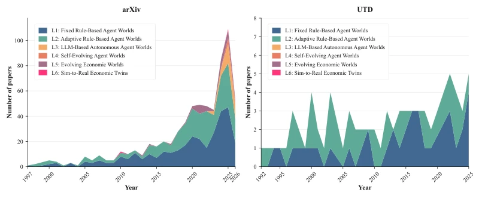
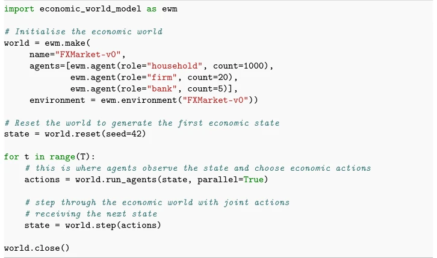
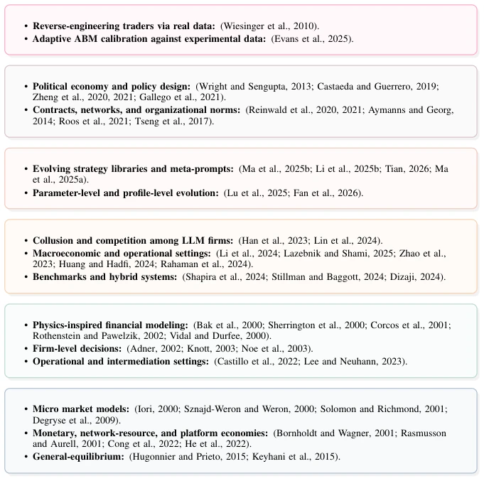
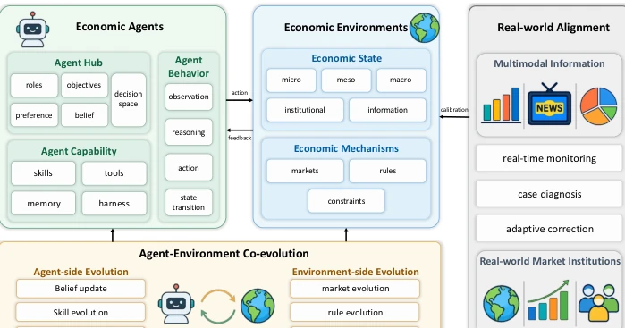
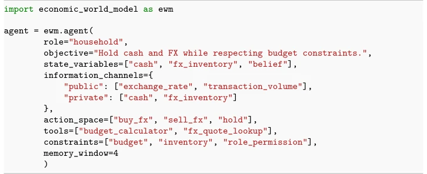

This paper attempts to establish rules for Economic World Models (EWM), forcibly combining economics and AI system architecture. The highlight is proposing a six-level capability ladder, clarifying the evolution path from fixed rules to sim-to-real, essentially establishing order in a chaotic field. But the drawbacks are also obvious: it consists entirely of theoretical frameworks and literature reviews, without a practically implemented EWM system, resembling more of a "requirements document" than "engineering implementation". The authors cite Cong (2025)'s DDGE framework, but this paper mainly focuses on CS perspective implementation, potentially compromising the rigor of economic equilibrium. For the Embodied AI community, this is more of a distant relative of "economic embodiment", far from true robot control, but the vision as an Agent training sandbox is commendable.
Existing economic simulation research is either too traditional (fixed rules) or too AI-oriented (LLM agents), lacking a systematic closed loop. Newton's quote highlights the uniqueness of the economic world: state transitions are driven by agent beliefs, not external physical laws. Existing work focuses on L1-L3 levels (fixed rules or simple adaptation), lacking self-evolution mechanisms and real-world alignment (L4-L6). Cong (2025) proposed the DDGE framework, but this paper points out the lack of an implementable system blueprint. OpenAI (2024) and Anthropic (2025) have begun focusing on economic impact, but lack high-fidelity sandboxes. This paper aims to solve the problem of "how to build an economic world", filling the gap from Agent to Agentic Economies.

Figure 1: Physical versus economic worlds. Physical state transitions are governed by external laws, whereas economic state transitions are generated by heterogeneous agents interacting through markets, institutions, and evolving rules.

Figure 2: Iterative co-improvement between Economic Agents and an EWM.
Overall adopts a modular runtime architecture, rather than a monolithic predictor. The core is the Agent-Environment closed loop: Agent outputs actions, Environment calculates state transitions. Proposes a six-level capability ladder (L1-L6) as an evaluation standard, gradually enhancing from fixed rules to Sim-to-Real. Specific modules include: 1) Agent layer: supports roles, goals, beliefs, memory, configured via `ewm.agent`; 2) Environment layer: encodes market mechanisms, contracts, rules, defined via `ewm.environment`; 3) Coevolution layer: Agent and rules adapt together, updated via `ewm.coevolution`; 4) Real-world alignment layer: simulation and observation data comparison correction, calibrated via `ewm.alignment`. Provides API interfaces (`ewm.make`, `world.step`, etc.), emphasizing endogeneity (Endogenous closure) and behavioral fidelity. State transition equation decomposed into belief update, action prediction, state update, aggregation, and rule evolution five steps, ensuring economic dynamics form endogenously. Additionally, the system includes an evaluation module `ewm.evaluation`, used for recording trajectories and diagnosis. This design makes EWM buildable, testable, and alignable, providing a high-fidelity sandbox for AI Agents.

Figure 7: Core components of an Economic World Model.

Figure 8: Reusable implementation protocol for EWMs.
This paper has no traditional model training experiments, but conducted a systematic literature survey. Collected 7836 candidate papers from arXiv and UTD-24 journals from 1950-2026, after screening obtained 737 effective EWM papers. Through LLM-assisted classification, plotted the literature distribution map (Figure 6). Found L1-L3 systems dominate, L4-L6 (self-evolution, real-world alignment) extremely scarce. This reveals the current imbalance where Agent intelligence improves fast, but economic world evolution is slow. No specific performance metrics, main contribution lies in classification system and architecture design.

Figure 6: Literature landscape of EWM papers across years, source types, and capability levels.
其他图片Other Figures

Figure 4: A minimal execution interface for EWM systems.

Figure 5: Representative systems by EWM level.

Figure 7 summarizes the core components of an Economic World Model. The figure is best read as a module map rather than a simulator blueprint: an EWM implementation can choose different domains, agent backends, mechanisms, datasets, and evaluation targets, but it should preserve the

Figure 9: Example specification of an agent in an EWM.